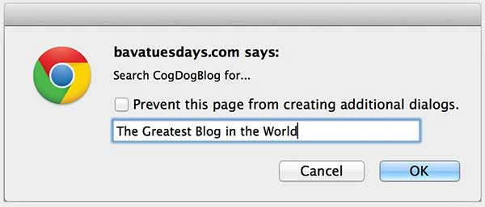

Blog Search Bookmarklet
Blog Search Bookmarklet
Creates a bookmarklet tool to search a Wordpress or Blogger blog from anywhere you are on the web, and include optionally any selected text as search terms. Why waste time loading a search form when you could be reading results?
Bookmarklet Generator
Build a bookmarklet tool for a blog, yours or heck, mine.